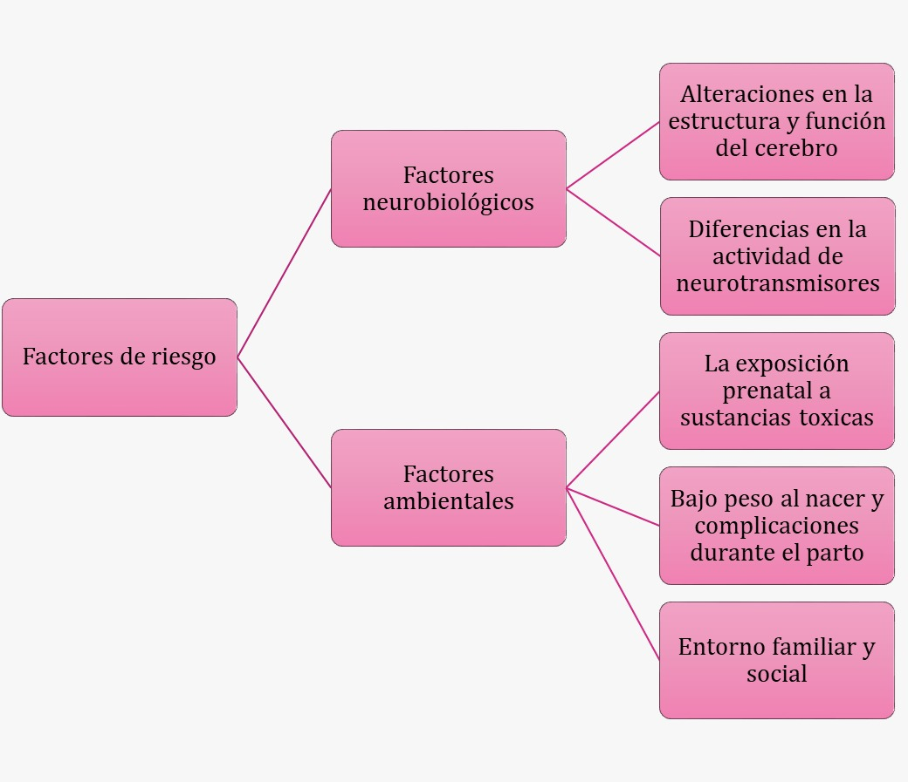

Etiología y Factores de Riesgo
La etiología del TDAH es compleja e involucra una interacción de factores genéticos, neurobiológicos y ambientales. La **predisposición genética** es significativa, con estudios mostrando que el TDAH tiene una heredabilidad estimada en 70-80%. Se han identificado varios genes asociados con el TDAH, especialmente aquellos relacionados con el sistema dopaminérgico, que es crucial para el control de la atención y el comportamiento.
Los factores neurobiológicos incluyen:
- Alteraciones en la estructura y función del cerebro, particularmente en el lóbulo frontal y los ganglios basales, áreas relacionadas con la atención y el control de impulsos.
- Diferencias en la actividad de neurotransmisores, como la dopamina y la noradrenalina, que afectan la regulación del comportamiento y la atención.
Entre los factores ambientales, se encuentran:
- La exposición prenatal a sustancias tóxicas, como el alcohol y el tabaco, que pueden afectar el desarrollo cerebral fetal.
- El bajo peso al nacer y las complicaciones durante el parto, que pueden influir en el desarrollo neurológico del niño.
- El entorno familiar y social, incluyendo el abuso infantil, el maltrato y el estrés severo, que pueden aumentar el riesgo de desarrollar TDAH.

regresar a INICIO